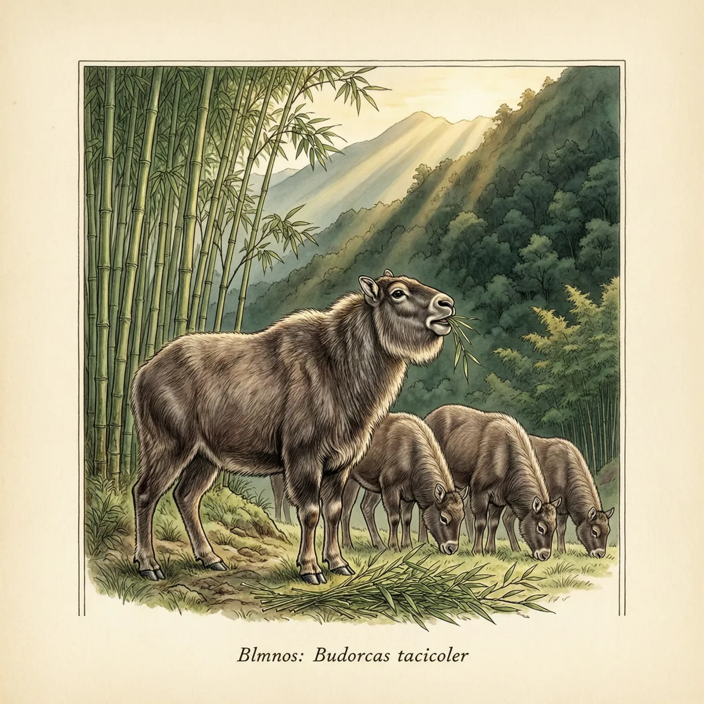
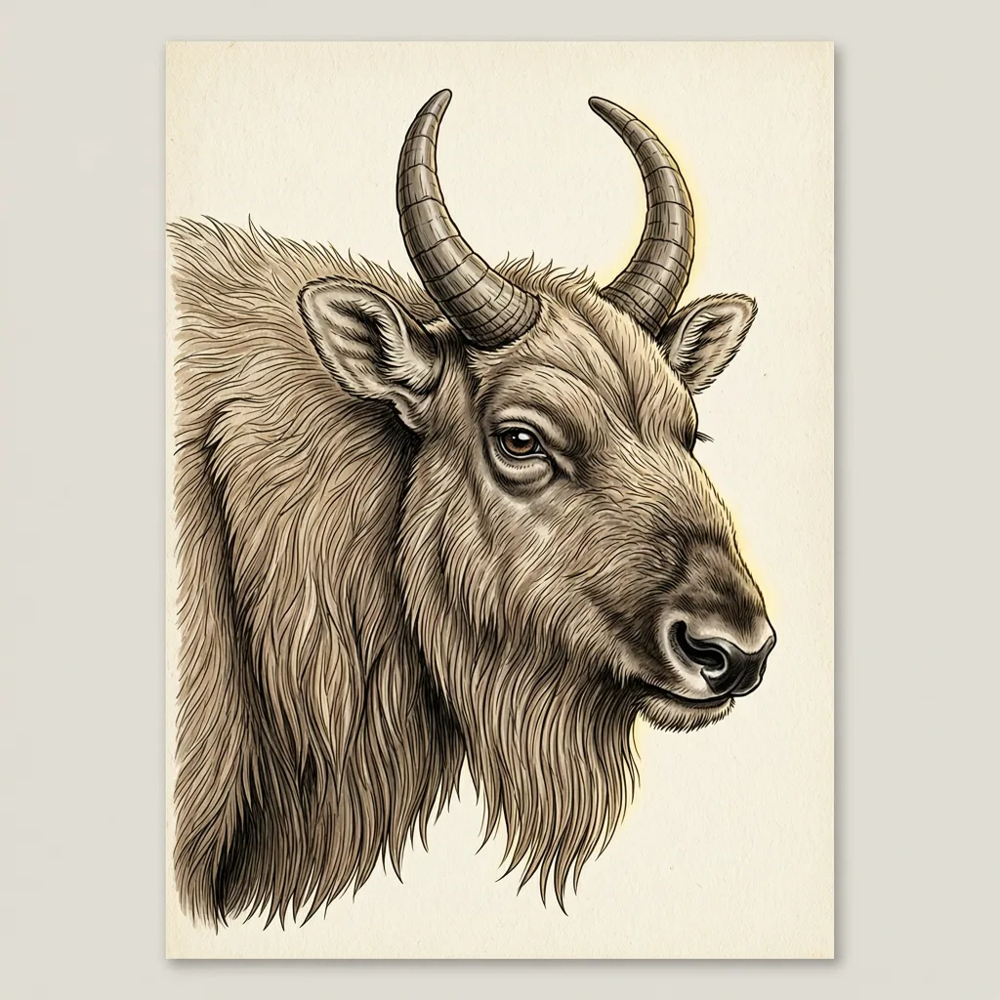

羚牛生活在喜马拉雅山东麓的高山竹林里，在中国与大熊猫的分布区相似，被视为国宝，在不丹是国兽。它头如马、角似鹿、蹄如牛、尾似驴，看着像牛，牙齿和蹄子却跟羊更近。群体冬天散成小队，夏天可超过100头，每胎只产一子。
海拔2000米以上，竹林连成片，一直分布到4500米，羚牛在这一带取食草、树叶和花蕾。它的活动范围贴着喜马拉雅山东麓的密林；在中国，羚牛的分布地区与大熊猫相似，数量稀少，因此也被视作「国宝」。不丹把它奉为国兽，全境仅有300只左右。
羚牛一年里换两种活法：冬天分成小规模的种群，夏天可以扩充到100头以上，年长的公羚牛基本独居。它们白天活动。繁殖上羚牛不追数量，每胎只产一子，平均寿命12到15年。更靠得住的是体格：雄性体重可达400公斤，雌性250公斤，公母都长角，角短而扭曲，一般长约20厘米。
羚牛不是牛。它的头如马、角似鹿、蹄如牛、尾似驴，体型介于牛和羊之间，可牙齿、角和蹄子的构造都跟羊更近，算得上超大型的野羊。2022年，中科院动物所的研究者把扭角羚属拆成了两个物种：喜马拉雅扭角羚只留下高黎贡羚牛和不丹羚牛两个亚种，四川羚牛与秦岭羚牛被划进中华扭角羚。四个不像凑在一身，反倒成了羚牛最好认的样子。
